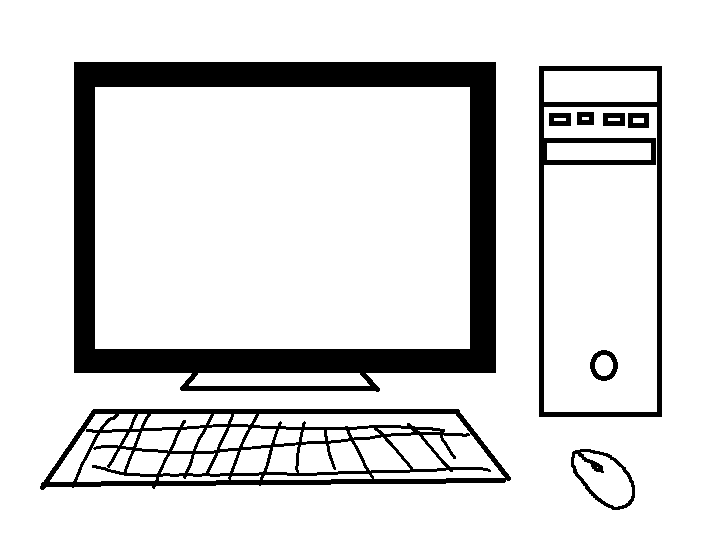

Practicing messing around with Bootstrap. This is a jumbotron.
A short demo of commonly used elements.
The class page-header will add a line underneath the section.
This is a title C'est un titre
This text is inside a p tag, which is inside a container, which is fixed-width depending on the screen size. It also contains some highlighted text.
The alternate class to the container is container-fluid, which is a fluid-container. The fluid-container expands to fill the width of the entire viewport. Highlighted text is made with the mark tag. These code looking things are made with the code tag.
Big block of code Grand bloc de code
The pre tag for multi-line code is great for code snippets, because it preserves line breaks that you write in the HTML file.
/* this is a block comment */
console.log("hello world");
alert("Interruption")
Colours! Couleurs!
This is muted text. Its class is text-muted. It's a light grey.
This is important text. Its class is text-primary. It's light blue.
This is success text. Its class is text-success. It's green.
This is information text. Its class is text-info. It's blue.
This is warning text. Its class is text-warning. It's yellow.
This is danger text. Its class is text-danger. It's red.
There are also similar colours for background colours instead of text. The names are the same too, except the prefix bg-, instead of text-, and bg-muted does not exist.
For reference it is:
bg-primary
bg-success
bg-info
bg-warning
bg-danger
Tables Tables
The table below has a more modern look than the default HTML style.
ID
School Name
Number of undergraduate students (2017)
1
UofT Scarborough
12,693
2
UofT St. George
43,375
3
UofT Mississauga
14,073
4
University of Waterloo
30,600
5
Ryerson University
37,000
Tables with pictures Tables avec les photos

A computer
A drawing of a desktop computer.
A computer
A drawing of a desktop computer.
A computer
A drawing of a desktop computer.
There are many ways to style tables. The one used above has class table table-striped. Available options are:
table Basic table styling.
table-striped Adds alternating stripes of light and dark between rows.
table-borderedAdds borders to all of the cells of the table and the sides.
table-hoverAdds a light grey highlight on rows when you hover over them with a mouse.
table-condensedMakes a more compact table with less cell padding.
table-responsiveCreates a responsive table, which will add a horizontal scrollbar on devices with < 768px wide.
Extra: contextual-classes. Like text and background colours, the following context classes can be set as the class of tr or th elements.
active - light grey
success - green
info - blue
warning - yellow
danger - red
Responsive images Images adaptatifs
Responsive images are images that will fill out a small screen, but will not go off screen.
Wells Puits
The well class puts contents in a grey sunken-in looking box.
Alerts Alertes
Success! You've made it this far into the page. This div has class alert alert-success. More on this page. That link also has class alert-link to match the colour of the alert div its in.
Buttons Boutons
Class is used on the button tag, with the class btn. There is also btn btn-primary with the same colours like the text colours. More info here. Link for button-groups
Inline Styling
The next few examples look at inline styling.
Glyphicons
Glyphicons are commonly used in UIs. These classes are usually applied to <span> elements
Example of Film:
Class used: glyphicon glyphicon-film
Badges Badges 1
Badges are small numbers that are often used to show notifications. They are inline elements. Hint: a useful place to put it is inside a button.
span class: badge
Block quotes Citations de blocs
Some inspirational quote, by some inspirational person.
Hey you made it to the end! Press ALT + F4 to close.